image generation이란?
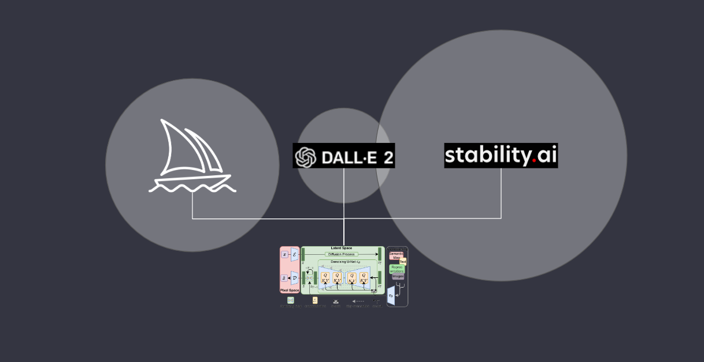
현시점에 많은 AI image generator 프로그램들이 있습니다.
우선 mid-journey, stable-diffusion, dall-e가 있고 다른 서비스 들도 사용자에 맞추어 특화되어 나오고 있습니다. (정림의 archigen도 그중하나)
다른 퀄리티, 스타일로 이미지가 생성되지만 가장 중요한 이미지 생성 방법은 결국 동일합니다.
단지 차이점은 이미지를 학습시키는 방법과 생성된 이미지 데이터를 수집 및 활용하는 방식입니다.
그중 Stable Diffusion은 학습과 생성 소스코드를 공개하였고, 이를 통해 사람들은 Stable Diffusion을 학습시키며 학습 모델을 만들고 발전시키면서 발전과 활용에 기여하고 있습니다.
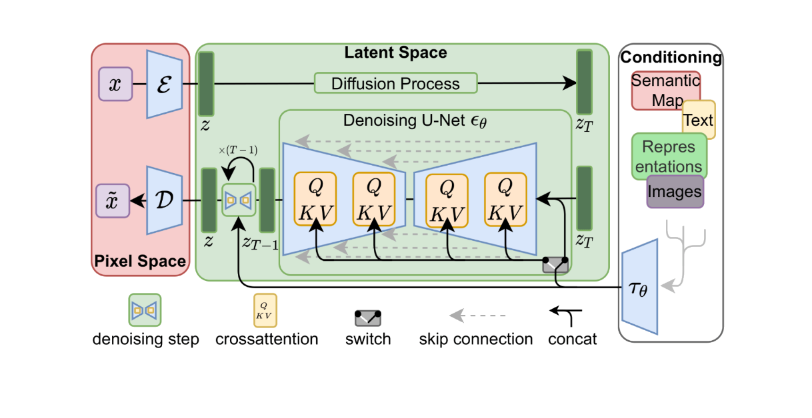
Stable diffusion 의 기본적인 알고리즘인 latent diffusion의 다이어그램은 다음과 같습니다.
그냥봐서는 이해하기 힘든 이 알고리즘 다이어그램을 이해하기 쉽게 하나씩 비유를 들어 설명하겠습니다.
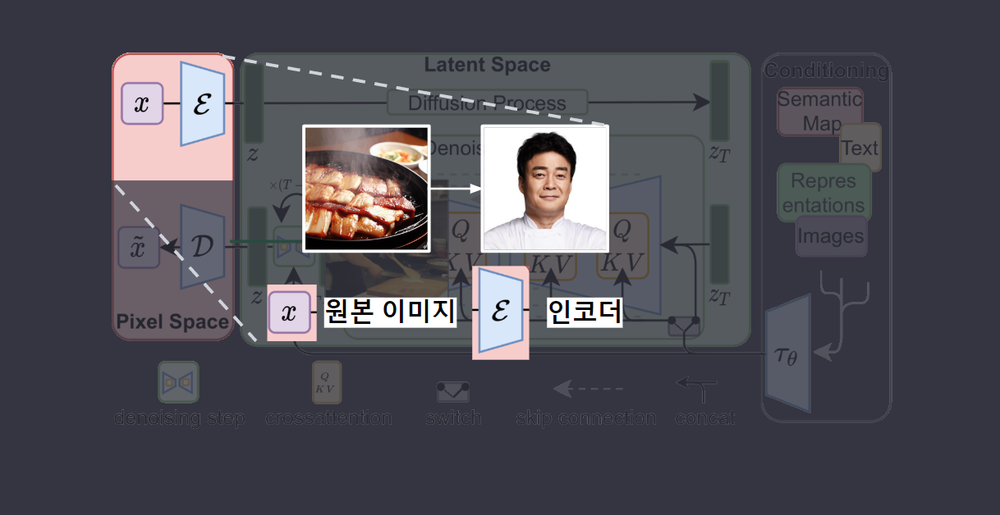
굉장히 쉽게 요식업 프랜차이즈 시스템에 비유할 수 있습니다.
프렌차이즈의 본사 혹은 여기 백종원님은 원본의 요리를 받아서
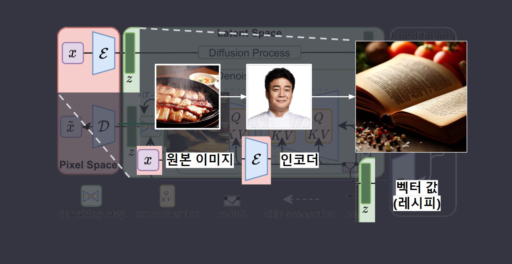
요리 (이미지) 를 압축한 레시피 (벡터) 를 생성하며
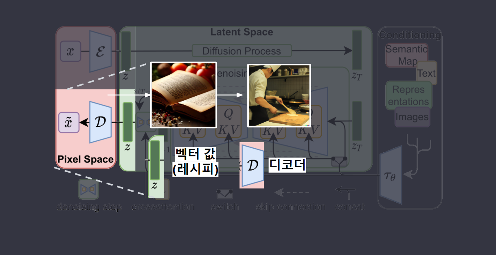
반대로 가맹주(디코더 D)는 이 레시피로
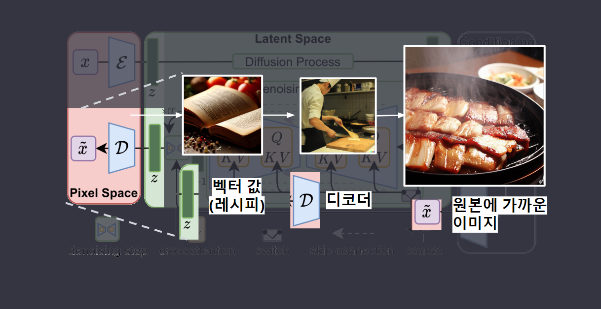
원래의 요리에 가까운 요리를(이미지)를 복원합니다.
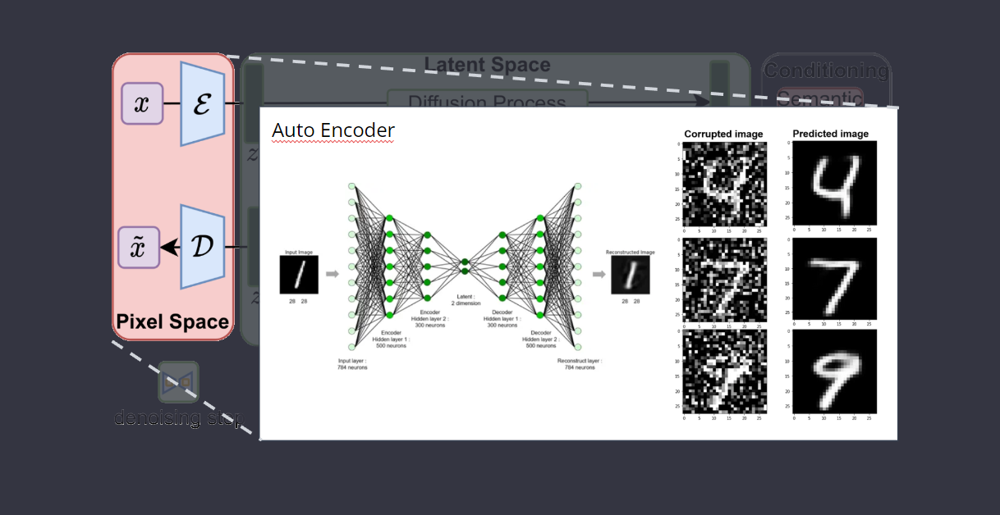
여기까지가 auto encoder의 기본개념입니다.
이미지의 레시피화와 레시피의 실현, 이미지를 레시피 대로 복원하는 역할입니다.
기존의 포토샵의 노이즈 제거, 간단한 이미지 복원과 같은 초기 단계의 이미지 처리 알고리즘이라고 생각하시면 됩니다.
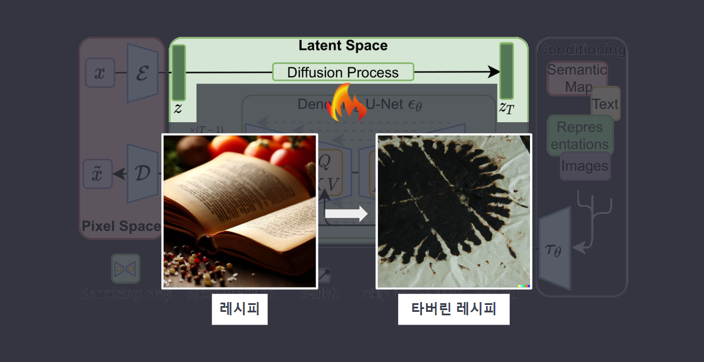
latent diffusion에서는 좀 더 발전된 방향으로 사용됩니다. 어느 날 가맹점 주인(D)은 실수로 중요한 레시피 일부를 태워버렸습니다(노이즈 추가(zT)).
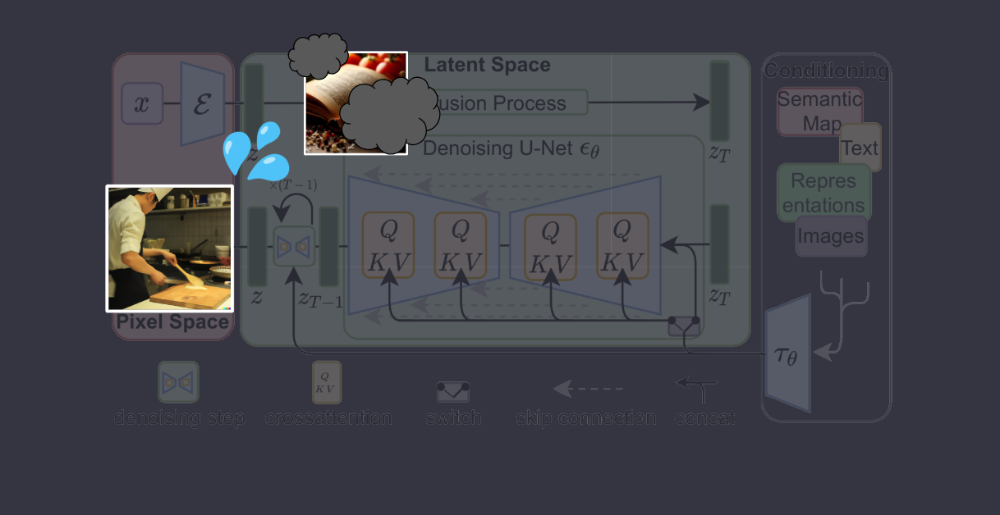
가맹주는 기억과 남은 레시피로 원래 레시피를 찾으려고 노력하고 있는데
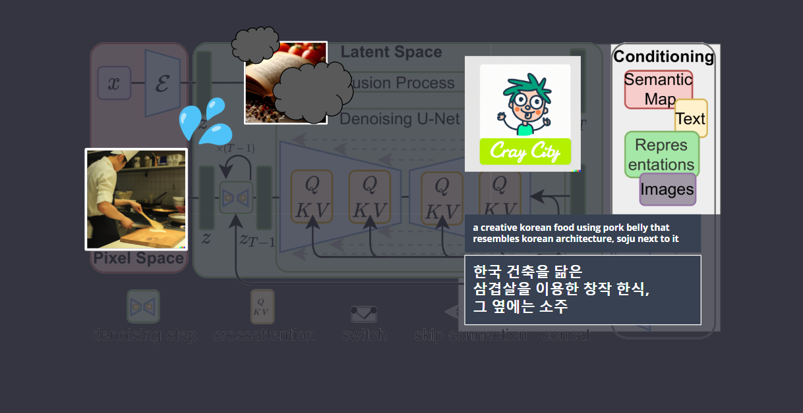
이런상황속에, 어떤 정신나간 손님 (사용자)가 원하는 음식이 있다고 와서는 추가 재료(prompt, img inpaint, img2img, control-net etc)를 제공하면서 원하는 음식이 있다고 만들라고 주문합니다.
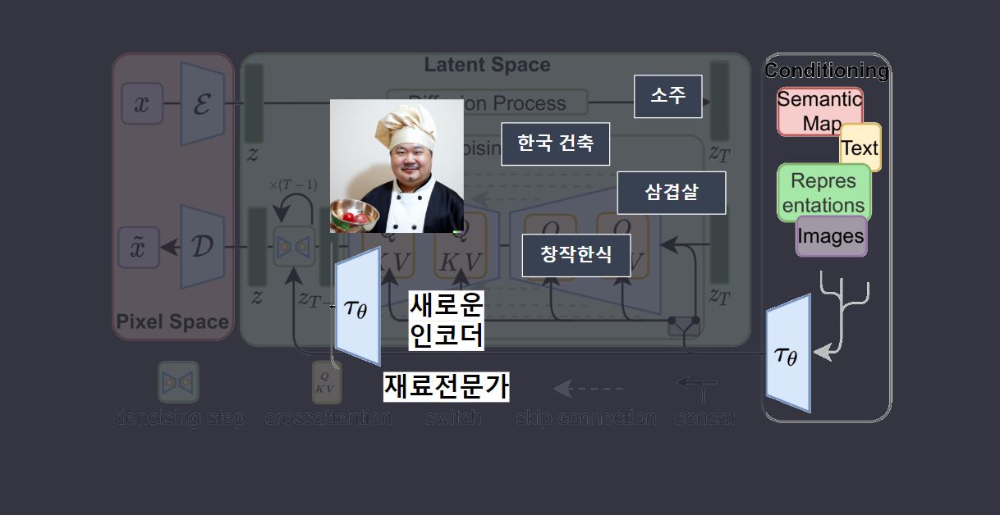
프랜차이즈 본사는 새로운 메뉴전문가 (새로운 인코더(t))를 투입해서 가맹점 주인이(D) 추가 재료를 이해할 수 있도록 도와줍니다.
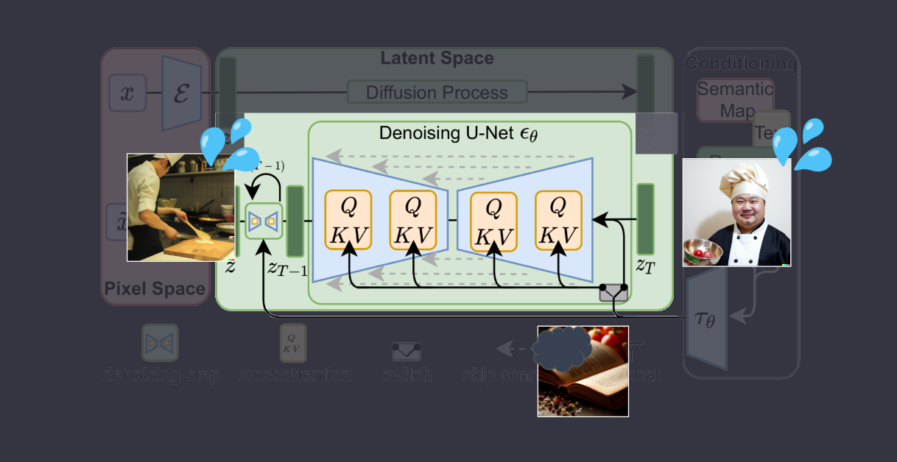
이 새 재료전문가 (새로운 인코더(t))는 노이즈를 제거하는 과정에서 새로운 레시피를 만듭니다(노이즈 제거).
그리고 가맹주(D)가 요리를 만들고 이 만들어진 요리가 원본의 재료들를 통해 만들어진 것이 맞는지 테스트하고를 sampling steps 수 만큼 반복합니다 (Stable Diffusion의 반복 과정).
(두 개의 서로 다른 입력 시퀀스를 혼합 또는 결합- Value Key Query)
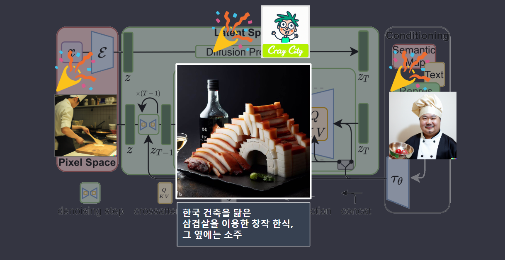
그리고 마침내 가맹점 주인은 손님의 요청에 따라 본사의 레시피와 새로운 아이디어를 결합해 독특하고 창의적인 요리를 만들어내고, 사용자는 가맹점 주인의 발전을 지켜보며 음식을 즐깁니다.
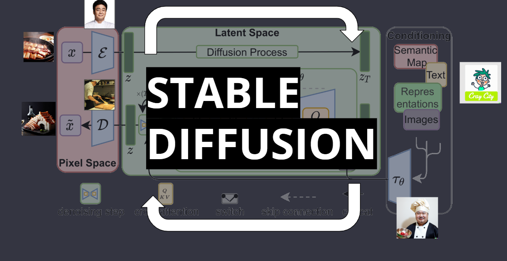
한줄로 비유하자면,
Stable Diffusion은 이미지의 원래의 레시피에 노이즈를 추가하고 제거하는 과정을 반복하여 원하는 결과를 얻는 것입니다.